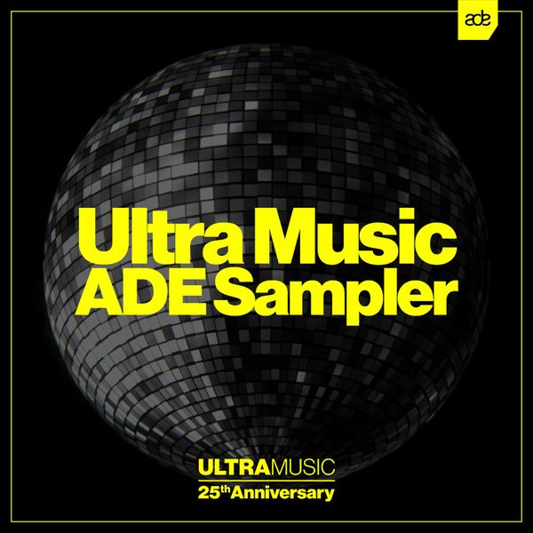

I 23 dischi
 1
Stay AwakeDon Diablo & Freak Fantastique
1
Stay AwakeDon Diablo & Freak Fantastique
 2
Deja VuOliver Heldens x Anabel Englund
2
Deja VuOliver Heldens x Anabel Englund
 3
It's Over NowPromise Land
3
It's Over NowPromise Land
 4
Devoted (feat. Byron Stingily)Martin Ikin
4
Devoted (feat. Byron Stingily)Martin Ikin
 5
Way I FeelRedondo & Malarkey
5
Way I FeelRedondo & Malarkey
 6
Need URudelies
6
Need URudelies
 7
I'm watching youGajo
7
I'm watching youGajo
 8
Never Let You GoAVIAN GRAYS feat. Ben Adams
8
Never Let You GoAVIAN GRAYS feat. Ben Adams
 9
Drunk tech qilaThe Cube Guys
9
Drunk tech qilaThe Cube Guys

10 Release YourselfRoger Sanchez 11
Turn It DownKaskade ft. Cop Kid
11
Turn It DownKaskade ft. Cop Kid
 12
Can't let U goTriple M & Andrew Marks
12
Can't let U goTriple M & Andrew Marks
 13
MiracleRetrovision
13
MiracleRetrovision
 14
DumbClara Sofie
14
DumbClara Sofie
 15
Rebel Heart - Milk Bar Vip EditFeel Project
15
Rebel Heart - Milk Bar Vip EditFeel Project
 16
Trouble So HardLe Pedre, DJs From Mars, Mildenhaus
16
Trouble So HardLe Pedre, DJs From Mars, Mildenhaus
 17
Beat For You7 Skies
17
Beat For You7 Skies
 18
Alive AgainDavid Guetta & MORTEN
18
Alive AgainDavid Guetta & MORTEN
 19
Closer to the sunDJ SODA x Hard lights x Flaremode (ft Irma)
20
Tell It To My Heart - Braxx & Paar Vs Umberto Balzanelli Bootleg RemixMEDUZA
19
Closer to the sunDJ SODA x Hard lights x Flaremode (ft Irma)
20
Tell It To My Heart - Braxx & Paar Vs Umberto Balzanelli Bootleg RemixMEDUZA
 21
Love Songs & Sex (Extended Mix)Will Taylor (UK)
21
Love Songs & Sex (Extended Mix)Will Taylor (UK)
 22
Ghetto Thang (Original Mix)DJ Deeon, Illyus & Barrientos, Gettoblaster
22
Ghetto Thang (Original Mix)DJ Deeon, Illyus & Barrientos, Gettoblaster
 23
Play Jana (Extended Mix)Bleu Clair
23
Play Jana (Extended Mix)Bleu Clair
La tracklist
- 1 Stay Awake Don Diablo & Freak Fantastique Hexagon
- 2 Deja Vu Oliver Heldens x Anabel Englund OH2 Records
- 3 It's Over Now Promise Land Hexagon
- 4 Devoted (feat. Byron Stingily) Martin Ikin Ultra Records
- 5 Way I Feel Redondo & Malarkey Spinnin' Records
- 6 Need U Rudelies Armada Music
- 7 I'm watching you Gajo Armada Music
- 8 Never Let You Go AVIAN GRAYS feat. Ben Adams Armada Music
- 9 Drunk tech qila The Cube Guys Cube Recordings
- 10 Release Yourself Roger Sanchez Ultra Records
- 11 Turn It Down Kaskade ft. Cop Kid Ultra Records
- 12 Can't let U go Triple M & Andrew Marks Sub Religion Records
- 13 Miracle Retrovision Time Machine
- 14 Dumb Clara Sofie LOVELACE RECORDINGS
- 15 Rebel Heart - Milk Bar Vip Edit Feel Project New Music
- 16 Trouble So Hard Le Pedre, DJs From Mars, Mildenhaus Spinnin' Records
- 17 Beat For You 7 Skies Heartfeldt Records
- 18 Alive Again David Guetta & MORTEN Musical Freedom
- 19 Closer to the sun DJ SODA x Hard lights x Flaremode(ft Irma) Purple Fly Records
- 20 Tell It To My Heart - Braxx & Paar Vs Umberto Balzanelli Bootleg Remix MEDUZA Mashup
- 21 Love Songs & Sex (Extended Mix) Will Taylor (UK) Saved Records
- 22 Ghetto Thang (Original Mix) DJ Deeon, Illyus & Barrientos, Gettoblaster Incorrect Music
- 23 Play Jana (Extended Mix) Bleu Clair Insomniac Records